はじめに
Autonomous Databaseでは自動バックアップがオンラインで取得され、取得したバックアップはバックアップを取得したADBにのみリストア可能です。保存期間は最小1日から最大60日で設定をする事が出来ます。インスタンス構成時にデフォルトで有効化されており、無効化することはできません。取得されたバックアップはOracle側で管理され、冗長化されており改変不可のイミュータブルバックアップです。
ユーザ自身がGUIやAPIを介して特定時点にリストアすることが可能です。本チュートリアルにおいても、Point-in-timeリカバリを実施いたします。
（補足） バックアップ操作中は、データベースは使用可能なままです。ただし、データベースの停止、スケーリング、終了などのライフサイクル管理操作は無効化されます。
目次 :
前提条件
- ADBインスタンスが構成済みであること
※ADBインタンスの作成方法については、 101:ADBインスタンスを作成してみよう を参照ください。
所要時間 : 約30分
自動バックアップの確認
Autonomousa Databaseの詳細画面
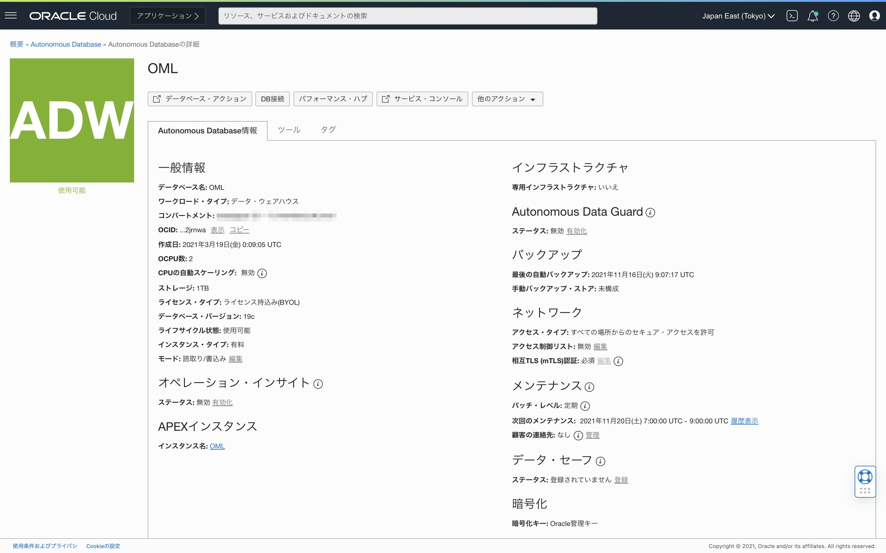
下にスクロールして、画面左側のタブのバックアップをクリックし、これまでバックアップ履歴を確認します。
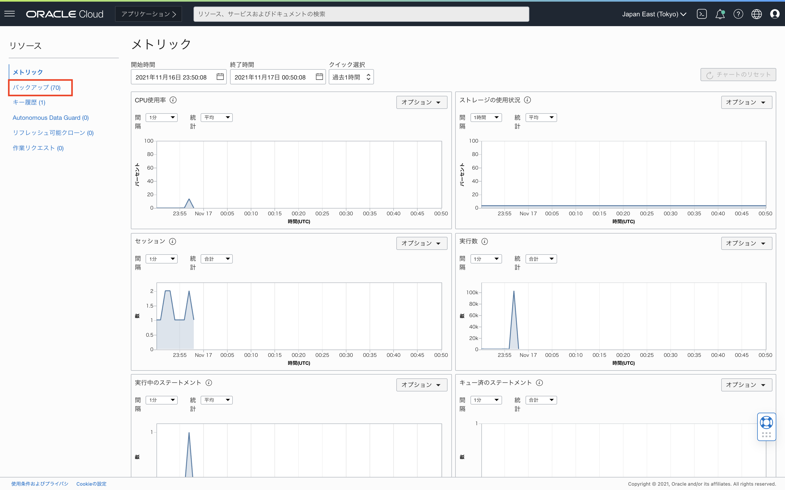
自動バックアップが日時で取られているのが確認できます。 特に設定を行わずとも、自動バックアップが構成されています。
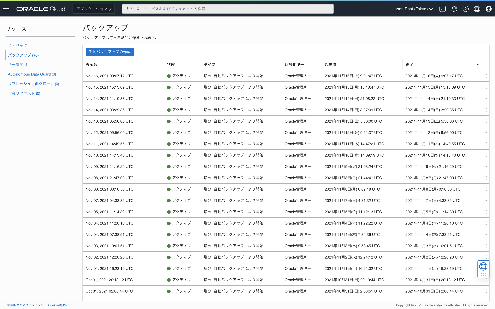
全て増分バックアップになっており、60日ごと取得されているフルバックアップが無いのでは？と思われたかもしれませんが、こちらは誤りではなく、フルバックアップはRMANでは増分バックアップのLevel0となるので、この一覧では全て増分バックアップとして表示されております。
なお、Autonomous Databaseでは、1分ごとにアーカイブログがバックアップされています。(ADB-Dでは15分ごと)
保存期間内の任意のタイミングにタイミングにリストア・リカバリが可能になっています。 RMANを利用しており、ブロック破損のチェックも同時に行われているため信頼できるバックアップになっています。
また、Autonomous Databaseでは、これらのバックアップを格納しておくストレージストレージの追加コストは不要です。
データベースに表を新規作成
では、この段階で新規でEmployee表を作成し、１行をインサートしてみます。
データベースの詳細画面のデータベース・アクションをクリックします。
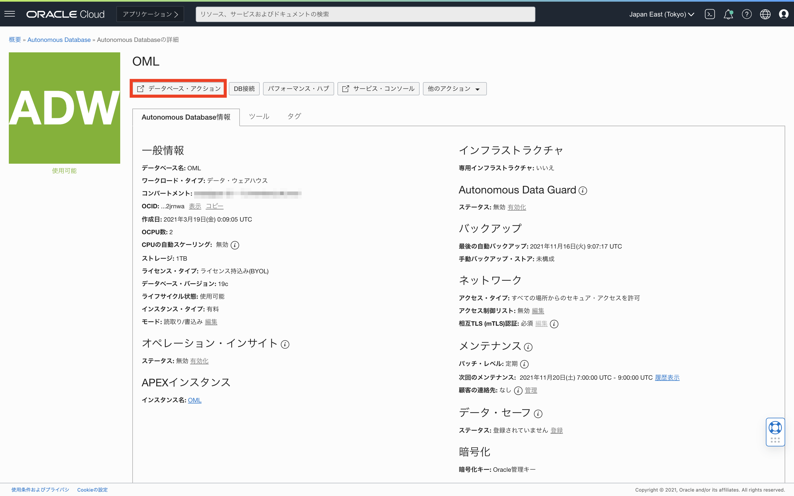
開発のSQLをクリックします。
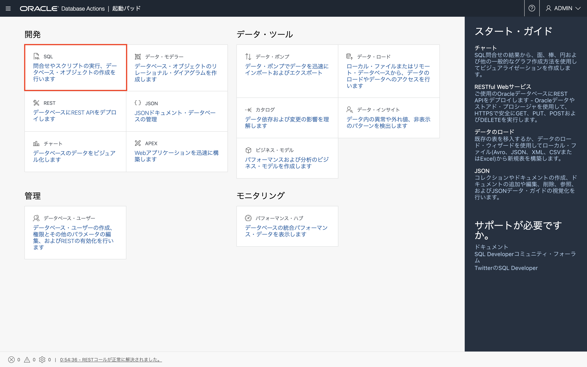
SQLワークシートにて、下記のSQLを実行し、Employees表を新規作成します。
CREATE TABLE EMPLOYEES (
FIRST_NAME VARCHAR(100),
LAST_NAME VARCHAR(100)
);
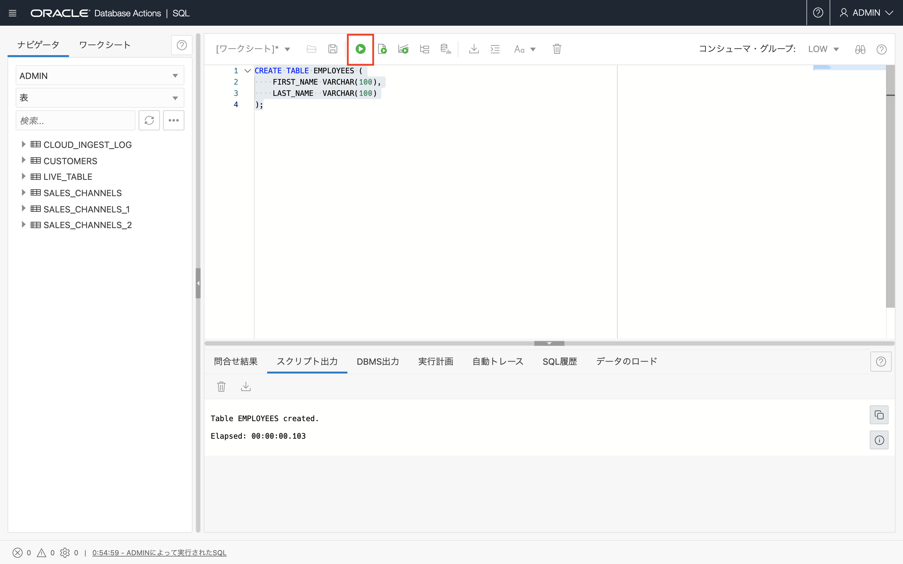
SQLワークシートにて、下記のSQLを実行し、Employees表に新規で行インサートします。
INSERT INTO EMPLOYEES (
FIRST_NAME,
LAST_NAME
) VALUES (
'Taro',
'Oracle'
);
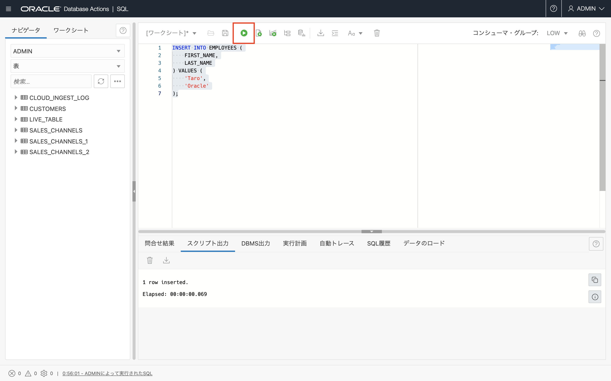
SQLワークシートにて、下記のSQLを実行し、Employees表を確認します。
Select * from Employees;
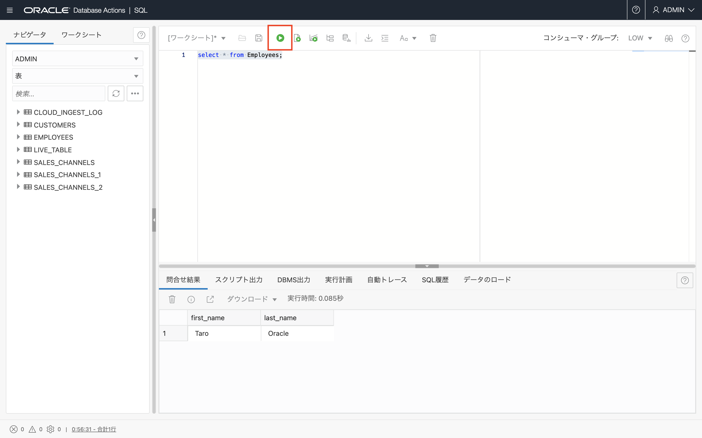
では、この段階でEmployee表の１行をアップデートしてみます。
SQLワークシートにて、下記のSQLを実行し、Employees表の１行をアップデートします。
UPDATE EMPLOYEES
SET
FIRST_NAME = 'John',
LAST_NAME = 'Autonomous';
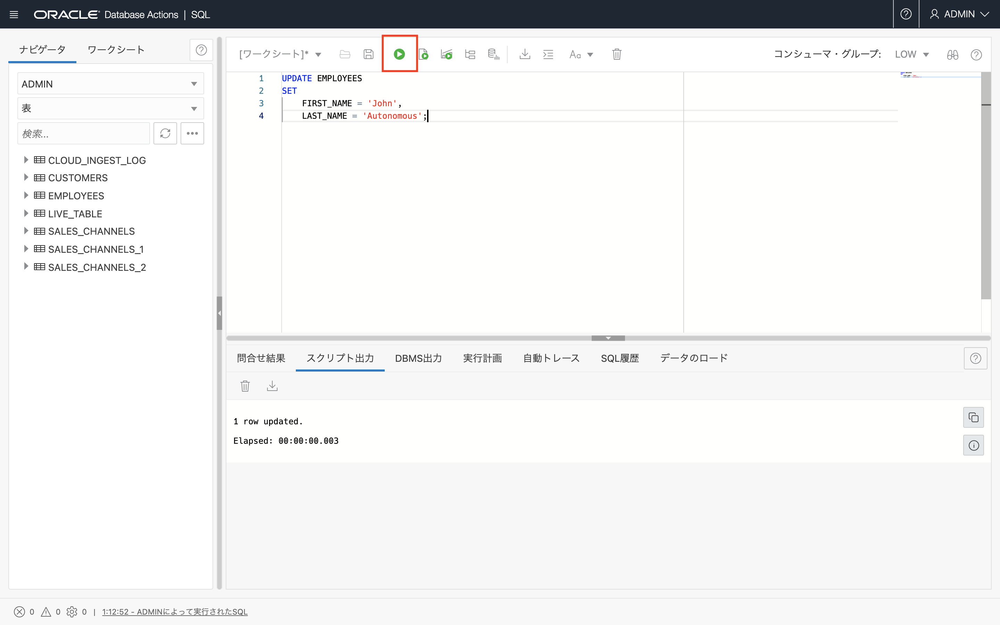
SQLワークシートにて、下記のSQLを実行し、Employees表を確認します。
Select * from Employees;
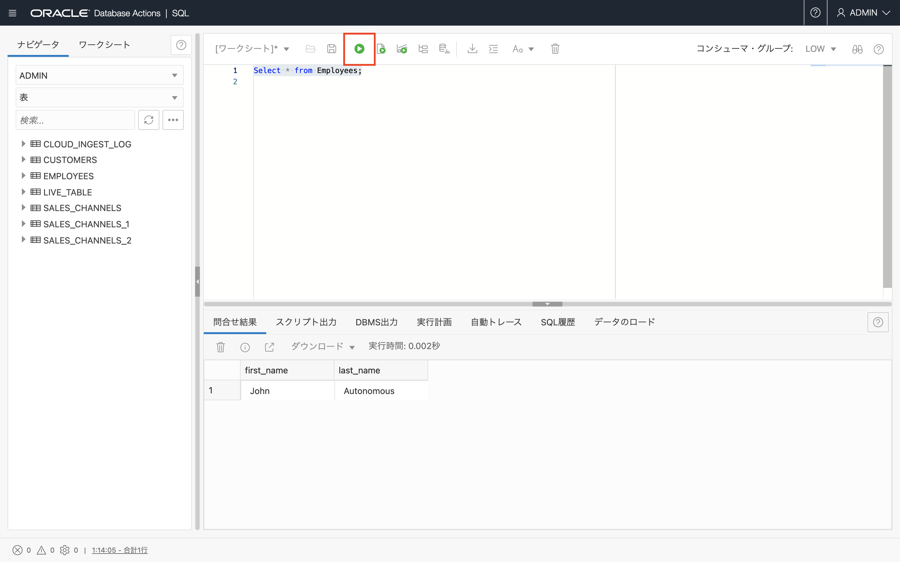
Employees表には、John Autonomousが格納されています。
タイムスタンプをUTCで確認
では、この時点でのタイムスタンプを確認してみましょう。
SQLワークシートにて、下記のSQLを実行します
SELECT
CURRENT_TIMESTAMP
FROM
DUAL;
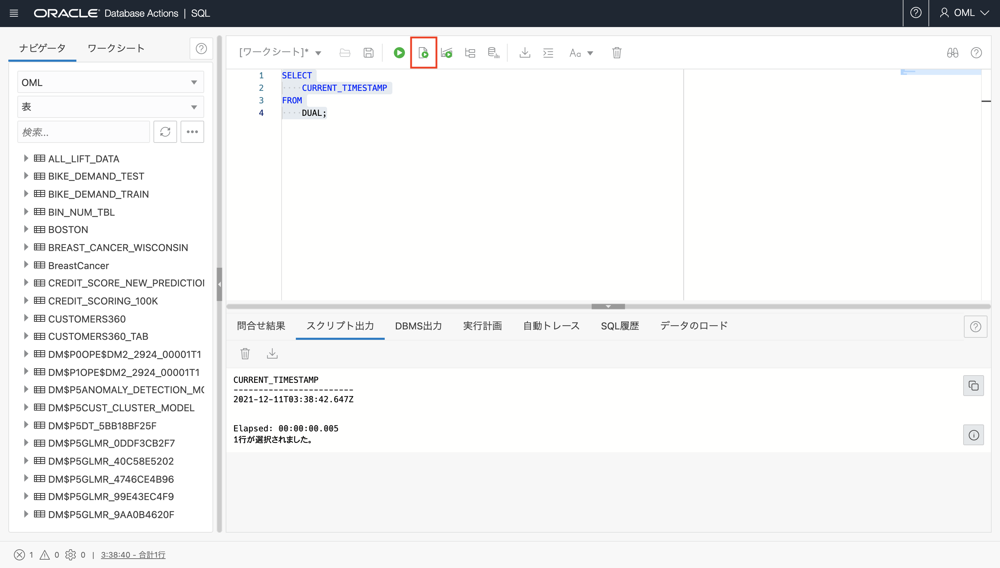
Point-in-timeリカバリの際に利用するため、結果をメモしておきます。
CURRENT_TIMESTAMP
------------------------
2021-12-11T03:38:42.647Z
（補足）現在時刻を問い合わせる際によく利用されるsysdateおよびsystimestamp関数ですが、Autonomous DatabaseはOSタイムゾーンがUTC固定となるため、返り値が日本時間（JST、+9:00)とはならない点にご留意ください。
返り値をJSTで取得したい場合、DBのタイムゾーンをJSTに変更後、SYSDATE_AT_DBTIMEZONEパラメータをTRUEに変更することで、sysdateおよびsystimestampをDBのタイムゾーンで返すようにすることができます。 詳しい手順はこちらをご参照ください。
Point-in-timeリカバリ
では、この段階でリストアを行います。
データベースの詳細画面の他のアクション>リストアをクリックします。
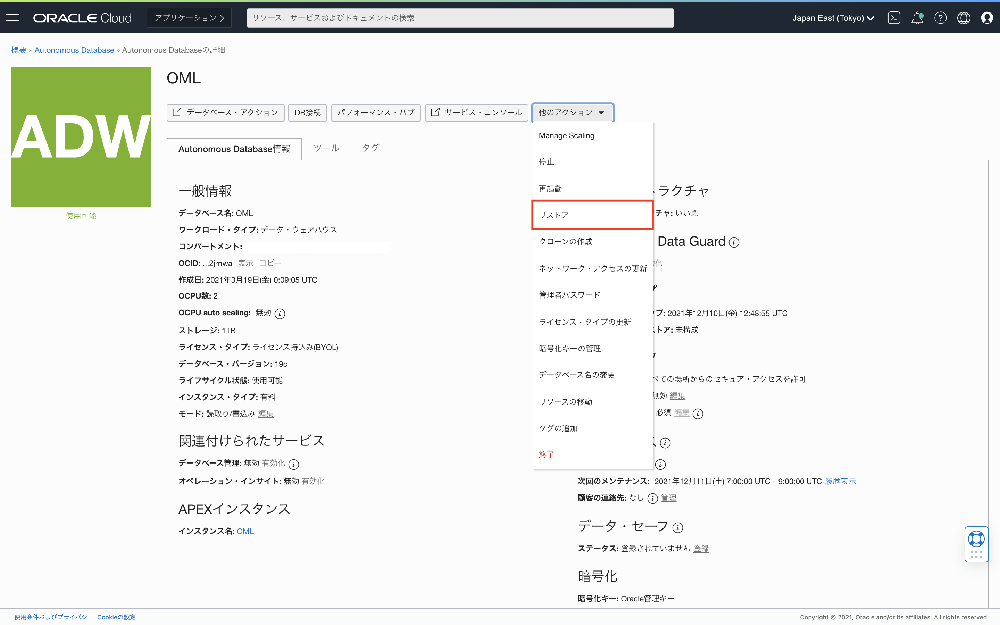
リストアのポップアップからタイムスタンプの入力から確認したタイムスタンプの直前の時間帯を入力し、リストアをクリックします。
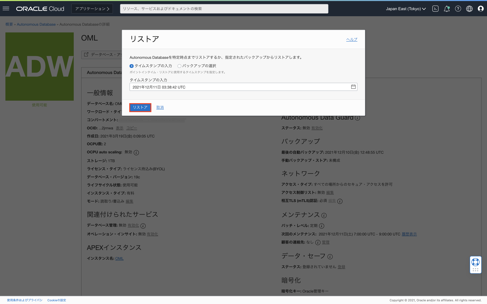
データベースの詳細画面でリストア進行中の状態であることが確認できます。
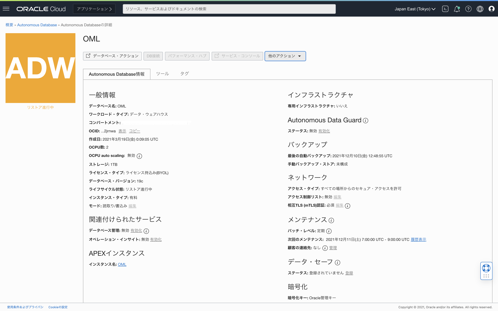
データベースの詳細画面でリストアが完了し、使用可能の状態になりました。
では、この段階でEmployee表を確認してみます。
データベースの詳細画面のデータベース・アクションをクリックします。
開発のSQLをクリックします。
SQLワークシートにて、下記のSQLを実行し、Employees表を確認します。
SELECT
*
FROM
EMPLOYEES;
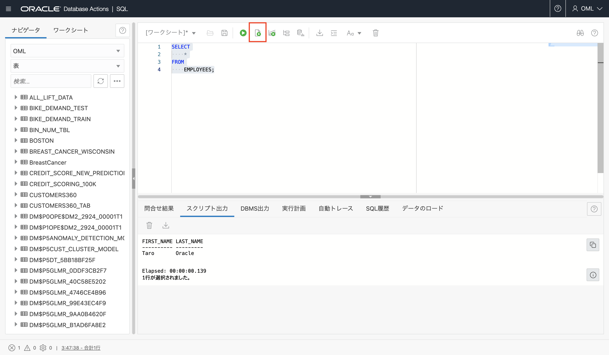
Taro Oracleにリストアされていることが確認できました。
ご参考
Autonomous Databaseでは、自動バックアップを補完するために長期バックアップを作成することもでき、Autonomous Databaseの長期バックアップはAutonomous Database Backup Storageで3ヶ月〜10間保持されます。自動バックアップと異なり、コンソール/APIを使用して、週次、月次、若しくは年次でスケジューリングをする必要があります。
長期バックアップについては、Autonomous Databaseで長期バックアップを作成する を参照ください。
また、Autonomous Databaseのバックアップ・リストアの手法一覧は下記でご確認いただけます。
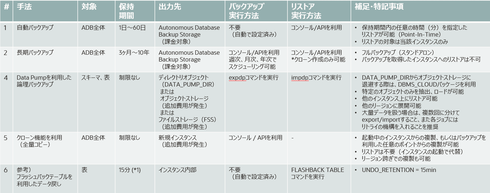
おわりに
本記事では、ADBにおける自動バックアップとリストアに関してご紹介致しました。Autonomous Databaseでは、自動的にバックアップが取られるため基本的に手動バックアップは不要です。リストア・リカバリもOCIコンソールから実行いただけます。
以上でこの章は終了です。次の章にお進みください。